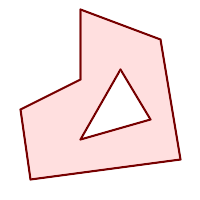

名前
ST_BuildArea — 与えられたジオメトリの構成ラインワークから面ジオメトリを生成します。
概要
geometry ST_BuildArea(geometry geom);
説明
入力ジオメトリの構成するラインワークから面ジオメトリを生成します。入力はLINESTRING、MULTILINESTRING、POLYGON、MULTIPOLYGON、GEOMETRYCOLLECTIONが可能です。入力ラインワークがポリゴンを形成しない場合には、NULLが返ります。
ST_MakePolygonと違い、この関数は複数の線で形成されたリングを受け付け、任意の数量のポリゴンを形成できます。
この関数は内側リングを穴に変換します。内側リングもポリゴンに変換したい場合にはST_Polygonizeを使います。
![[注記]](../images/note.png) | |
この関数が確実に動作するためには、ラインワークに正しくノードが加えられていなければなりません。ラインにノードを加えるにはST_Nodeを使用します。 入力ラインワークがクロスする場合には、この関数は不正なポリゴンを生成します。ST_MakeValidで、出力を確実に妥当なものにすることができます。 |
Availability: 1.1.0
例
入力ライン
|
 結果のポリゴン
|
WITH data(geom) AS (VALUES
('LINESTRING (180 40, 30 20, 20 90)'::geometry)
,('LINESTRING (180 40, 160 160)'::geometry)
,('LINESTRING (160 160, 80 190, 80 120, 20 90)'::geometry)
,('LINESTRING (80 60, 120 130, 150 80)'::geometry)
,('LINESTRING (80 60, 150 80)'::geometry)
)
SELECT ST_AsText( ST_BuildArea( ST_Collect( geom )))
FROM data;
------------------------------------------------------------------------------------------
POLYGON((180 40,30 20,20 90,80 120,80 190,160 160,180 40),(150 80,120 130,80 60,150 80))
二つの円ポリゴンからのドーナツの生成
SELECT ST_BuildArea(ST_Collect(inring,outring))
FROM (SELECT
ST_Buffer('POINT(100 90)', 25) As inring,
ST_Buffer('POINT(100 90)', 50) As outring) As t;
関連情報
ST_Collect, ST_MakePolygon, ST_MakeValid, ST_Node, ST_Polygonize, ST_BdPolyFromText, ST_BdMPolyFromText (標準ＯGCインタフェースを持つこの関数へのラッパ)